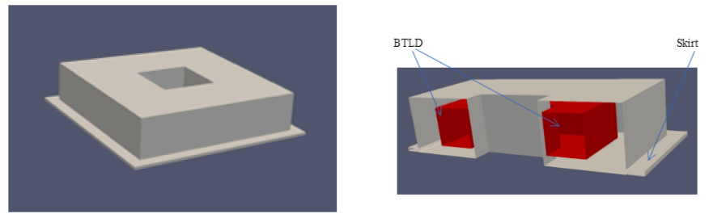
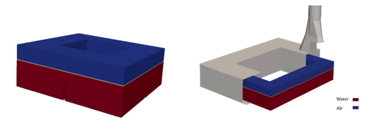
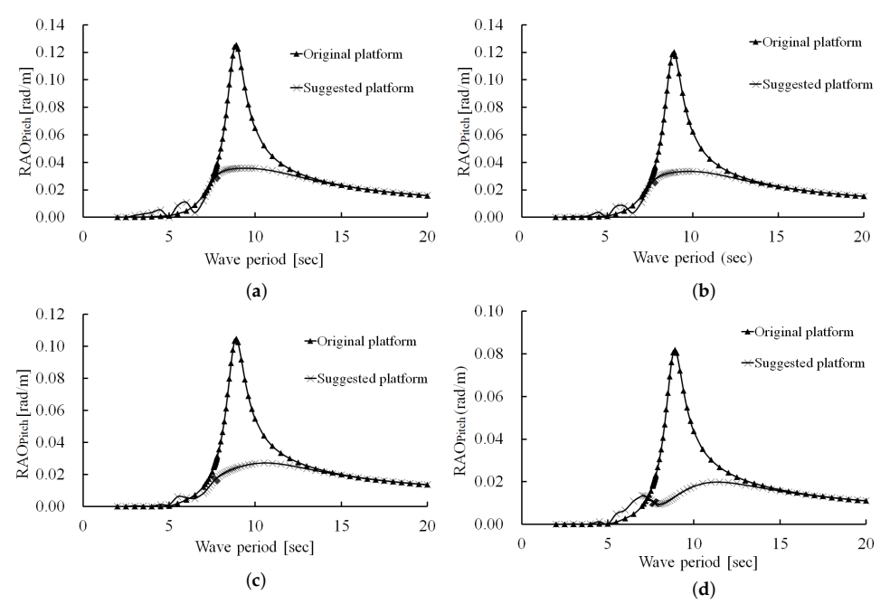
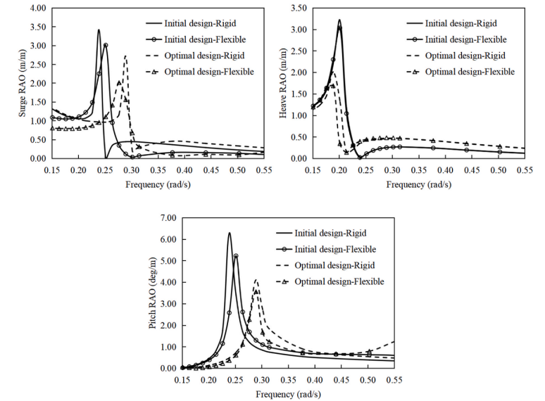
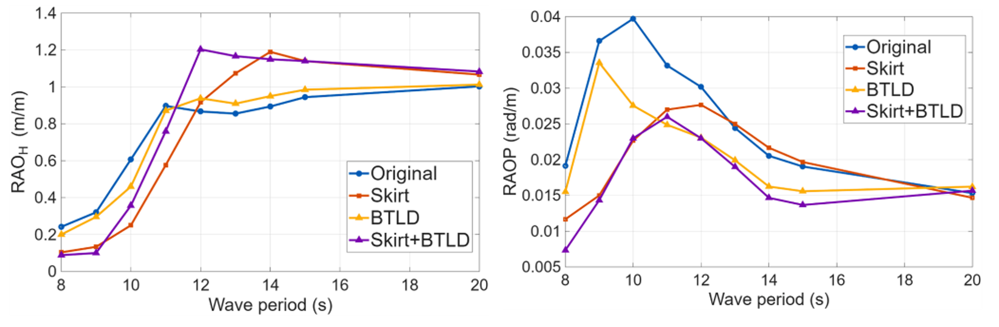

Can We Reduce the Motion of a Floating Wind Turbine Passively?
How geometry, liquid sloshing, and hydrodynamic appendages can control platform motion without active actuation
A floating offshore wind turbine has an unavoidable problem.
It floats.
Unlike a fixed offshore structure, its foundation is allowed to move under wind and wave loading.
The platform can undergo six rigid-body motions:
\[ \text{surge},\quad \text{sway},\quad \text{heave},\quad \text{roll},\quad \text{pitch},\quad \text{yaw}. \]
Among them, pitch is particularly important for floating wind turbines because even a relatively small platform rotation produces a large displacement at the hub.
The obvious question is therefore:
Can we reduce the motion of a floating wind turbine without actively controlling it?
The answer is yes.
But passive motion control does not mean simply making the structure heavier or stiffer.
A more useful mechanics view is:
Change how the floating system stores, transfers, and dissipates wave energy.
Our recent studies explored several ways of doing exactly that.
What does passive control really mean?
An active control system senses motion and deliberately generates a corrective action.
A passive system does not.
It requires no continuously commanded actuator and no external control energy.
Instead, its response emerges naturally from
- inertia,
- gravity,
- buoyancy,
- internal liquid motion,
- hydrodynamic added mass,
- radiation damping,
- viscous dissipation,
- and structural geometry.
A simplified floating-body equation illustrates where passive control enters:
\[ \left[ -\omega^2(\mathbf{M}+\mathbf{A}) +i\omega\mathbf{B} +\mathbf{C} \right]\boldsymbol{\xi} = \mathbf{F}_{\mathrm{wave}}, \]
where
- \(\mathbf{M}\) is structural mass,
- \(\mathbf{A}\) is hydrodynamic added mass,
- \(\mathbf{B}\) represents damping,
- \(\mathbf{C}\) represents restoring stiffness,
- \(\boldsymbol{\xi}\) is the motion response, and
- \(\mathbf{F}_{\mathrm{wave}}\) is wave excitation.
A passive device does not need to cancel the wave force directly.
Instead, it can change
\[ \mathbf{A}, \qquad \mathbf{B}, \qquad \mathbf{C}, \]
or introduce another dynamic subsystem that interacts with the platform.
That gives us several different strategies.

Strategy 1: Let another mass move
The most familiar passive-control idea comes from structural vibration control.
Suppose a structure has generalized displacement \(x\).
If a secondary mass is allowed to move relative to the structure, its inertia can generate a force that opposes the dominant structural motion.
A tuned mass damper uses a solid mass.
A tuned liquid damper (TLD) uses water.
When the platform moves, the liquid sloshes.
If the liquid motion is properly tuned, the resulting force or moment develops a favorable phase relationship with the platform motion.
Schematically,
\[ \text{platform pitch} \rightarrow \text{liquid sloshing} \rightarrow \text{counteracting moment}. \]
The control action therefore comes from the liquid itself.
Why use liquid instead of a mechanical mass?
Liquid has several attractive characteristics for offshore applications.
It can provide
- inertia,
- gravitational restoring force,
- viscous energy dissipation,
- and impact/sloshing losses
without requiring a mechanically driven actuator.
Our studies examined a bidirectional tuned liquid damper (BTLD), which allows sloshing in more than one horizontal direction.

The important word is tuned.
The liquid should not simply move.
Its natural sloshing behavior must interact appropriately with the motion that we want to reduce.
The key is phase, not merely damping
Passive motion control is often described simply as “adding damping.”
That is incomplete.
For a tuned system, the phase relationship is fundamental.
Consider harmonic platform motion:
\[ \theta(t) = \Theta\sin\omega t. \]
The liquid motion produces another moment,
\[ M_{\mathrm{liq}}(t) = M_0\sin(\omega t-\phi). \]
If the phase difference \(\phi\) is favorable, the liquid-generated moment opposes the excitation that drives pitch.
Then the effective pitching action becomes smaller.
This is why tuning the liquid depth, tank dimensions, and internal baffles matters.
Our early BTLD study found that an optimized BTLD could reduce pitch motion by approximately 10–30%, depending on wave period and configuration.
A subsequent comparison of BTLD and bidirectional tuned liquid column damper concepts, together with platform geometry, found reductions of approximately 20–40% for optimized combinations.
The important result is not simply the percentage.
It is that the platform and damper must be treated as one coupled dynamic system.
Strategy 2: Change the floater itself
There is another way to reduce motion that requires no added damping device at all:
Change the geometry of the floating structure.
This is perhaps the purest form of passive motion control.
Changing geometry changes
- displaced volume,
- waterplane geometry,
- center of buoyancy,
- mass distribution,
- moment of inertia,
- hydrostatic restoring characteristics,
- added mass,
- radiation damping,
- and wave diffraction.
Thus,
\[ \text{geometry} \rightarrow \text{hydrodynamic coefficients} \rightarrow \text{dynamic response}. \]
The structure itself becomes the control system.
A barge does not have to remain a simple box
Barge-type floating wind platforms are attractive because they are geometrically simple and have relatively shallow draft.
But a simple rectangular box is not necessarily hydrodynamically optimal.
We therefore investigated several geometric modifications:
- an octagonal moonpool,
- a horizontal skirt,
- trapezoidal outer walls.
The mass of the reference platform was maintained while its geometry was changed.
This was important.
Otherwise, reduced motion could simply be attributed to adding more material.
The objective was instead:
Can we redistribute the same basic structural resources more intelligently?
A skirt changes the water that must move with the platform
Consider a horizontal skirt attached to the floating platform.
When the platform moves, the skirt forces additional surrounding water to accelerate.
From the platform’s viewpoint, this behaves like additional inertia.
This appears in the equations as increased added mass:
\[ \mathbf{M}_{\mathrm{eff}} = \mathbf{M} + \mathbf{A}. \]
If \(\mathbf{A}\) increases, the dynamic properties of the system change.
The skirt also changes radiation and diffraction behavior.
In a viscous flow, its edges can additionally generate
- flow separation,
- vortex shedding,
- and viscous energy dissipation.
So the skirt does not merely add structural area.
It modifies the fluid–structure interaction itself.
More skirt is not always proportionally better
One of the useful engineering observations was that increasing skirt size eventually produced diminishing returns.
That makes physical sense.
The objective is not
make the skirt as large as possible.
It is
make the skirt large enough to create the required hydrodynamic effect.
The same design philosophy appears repeatedly in engineering optimization.
Once the governing mechanism has saturated, additional material gives progressively less benefit.
Skirt position was also critical.
In the barge study, changing the position of the skirt could produce very large differences in motion response.
Thus geometry must be designed together with hydrodynamics rather than treated merely as structural detailing.
The moonpool is another moving body of water
The moonpool introduces yet another passive dynamic subsystem.
The water inside the opening can oscillate relative to the platform.
This internal fluid has its own characteristic motions, including
- piston-type vertical motion,
- sloshing-type horizontal motion.
Again, phase matters.
If the internal water motion develops a favorable phase relation with the structural motion, it can contribute to motion attenuation.
If instead the two systems approach resonance in an unfavorable way, motion can be amplified.
Thus,
\[ \boxed{ \text{a passive device can either suppress or amplify motion} } \]
depending on its dynamic tuning.
This is a fundamental limitation of passive control.
Geometry alone produced a surprisingly large change
After combining the skirt, moonpool, and trapezoidal platform geometry, the optimized barge configuration showed substantially smaller motion than the original rectangular configuration.
The study reported approximately
- 20% reduction in heave, and
- up to 70% reduction in pitch
under the investigated conditions.
Increasing the moonpool area to approximately
\[ 400~\mathrm{m^2}, \]
about 10% of the platform surface area, also produced additional motion reduction before the benefit began to saturate.

The important engineering interpretation is:
A floating structure’s shape is not merely something that carries loads. Its shape determines the hydrodynamic system with which the waves interact.
Strategy 3: Optimize mass distribution and restoring behavior
The same principle applies to a very different floating concept: the spar.
A spar obtains much of its pitch stability from its deep draft and low center of gravity.
Its motion is therefore strongly affected by
- diameter,
- draft,
- ballast distribution,
- center of gravity,
- and slenderness ratio.
In our OC3 spar optimization study, the total floater mass and displaced water volume were kept fixed while geometric variables were changed.
That allows a particularly clean engineering comparison:
\[ \text{same mass} \quad+\quad \text{different geometry} \quad\Rightarrow\quad \text{different dynamics}. \]
The spar shows that mass placement can matter more than mass itself
The optimization changed the lower-cylinder diameter, draft, wall thickness, and ballast configuration.
The final design increased the lower diameter from approximately
\[ 9.4~\mathrm{m} \]
to
\[ 12.0~\mathrm{m}, \]
while reducing the draft from
\[ 120~\mathrm{m} \]
to approximately
\[ 76.9~\mathrm{m}. \]
Under the investigated wave conditions, the optimized design reduced the rigid-body RAO peaks by approximately
- 20.45% in surge,
- 37.44% in heave,
- 34.57% in pitch.
The flexible model showed reductions of approximately
- 33.10% in surge,
- 44.35% in heave,
- 31.85% in pitch.

This gives another important principle:
Passive control does not necessarily require adding something. Sometimes it means putting the existing mass and buoyancy in better places.
Structural flexibility also absorbs energy—but at a cost
The spar study considered both rigid-body and hydroelastic responses.
Interestingly, the flexible models generally showed somewhat smaller rigid motion than the corresponding rigid models.
One physical interpretation is that elastic deformation can absorb part of the wave-induced energy that would otherwise appear as rigid-body motion.
But this is not free damping.
Energy entering structural deformation can produce
- stress,
- fatigue damage,
- and local structural demand.
Therefore,
\[ \text{less rigid-body motion} \not\Rightarrow \text{automatically better structural performance}. \]
This is an important distinction when optimizing large floating structures.
Motion reduction must eventually be considered together with structural integrity and fatigue.
Strategy 4: Combine passive mechanisms
The next logical question is:
Can several passive mechanisms work together?
Our latest study combined
- an internal BTLD, and
- an external horizontal skirt.
These mechanisms act differently.
The BTLD works primarily through
\[ \text{internal liquid dynamics} + \text{phase-controlled counteracting moment} + \text{energy dissipation}. \]
The skirt works primarily through
\[ \text{added mass} + \text{modified diffraction/radiation} + \text{viscous flow effects}. \]
Therefore, their actions can be complementary.
Internal control and external control are mechanically different
It is useful to distinguish two domains.
Inside the platform
The BTLD changes the dynamics by allowing water to move relative to the structure.
Energy is transferred into internal liquid motion and dissipated through sloshing and viscous effects.
Outside the platform
The skirt changes how the surrounding sea must move with and around the structure.
It alters hydrodynamic added mass, radiation, diffraction, flow separation, and vortex shedding.
Thus the combined system attacks the same motion through two different physical routes:
\[ \boxed{ \text{internal sloshing} + \text{external hydrodynamics} } \]
The combination works particularly well for pitch
The combined BTLD–skirt study compared four configurations:
- bare platform,
- BTLD only,
- skirt only,
- BTLD + skirt.
For the design-tuned skirt configuration, the skirt length was
\[ L=4~\mathrm{m}, \]
with a submergence depth of
\[ d=10~\mathrm{m}. \]
The combined system produced very small pitch RAOs over the investigated period range.
The minimum reported pitch RAO was approximately
\[ 0.007 \]
at a wave period of 8 s, and the pitch RAO remained below approximately 0.026 throughout the analyzed periods.

This is perhaps the clearest demonstration of passive motion control in the series of studies.
But it also reveals an important limitation.
Reducing one motion can worsen another
The heave response did not follow the same simple trend as pitch.
The skirt reduced heave in short and intermediate wave periods.
But around approximately
\[ T=12\text{--}14~\mathrm{s}, \]
the skirt and combined configurations could produce larger heave response than the bare platform.
At longer periods, the BTLD had only a minor influence on heave.
This result is extremely important.
A passive device changes the dynamics of the system.
It does not simply subtract motion.
Changing added mass, damping, restoring forces, or an internal resonance changes the entire frequency response.
Therefore:
A passive device that suppresses one response strongly may shift or amplify another response elsewhere in frequency.
This is why passive-control design must be frequency-aware.
Passive control is fundamentally a resonance problem
Consider a simplified single-degree-of-freedom system:
\[ m\ddot{x} + c\dot{x} + kx = F_0\sin\omega t. \]
Its response depends strongly on the relationship between
\[ \omega \]
and the natural frequency
\[ \omega_n=\sqrt{\frac{k}{m}}. \]
A passive modification can change
\[ m, \qquad c, \qquad k, \]
or introduce an additional natural frequency.
Therefore it can
- reduce a resonance peak,
- shift a resonance,
- broaden the response,
- introduce another coupled mode,
- or alter the response differently in different frequency ranges.
This is why asking
“Does the device reduce motion?”
is incomplete.
A better question is:
Which motion, at which frequency, and by which physical mechanism?
Three passive design philosophies
The studies can therefore be understood through three broad mechanics strategies.
1. Change the primary structure
Examples:
- spar diameter,
- draft,
- ballast distribution,
- barge wall inclination,
- moonpool size.
This changes the natural dynamics of the floating structure itself.
2. Add a secondary dynamic system
Example:
- BTLD or BTLCD.
The secondary system moves relative to the platform and generates a favorable dynamic reaction.
3. Modify fluid–structure interaction
Example:
- skirts and hydrodynamic appendages.
These change the amount and manner in which the surrounding water participates in the motion.
The combined BTLD–skirt concept uses the second and third strategies simultaneously.
The common mechanism is energy redistribution
These approaches look geometrically very different.
A 120-m-deep spar is nothing like a sloshing liquid tank.
A skirt is nothing like ballast.
Yet they can all be interpreted through the same mechanics idea.
Wave excitation supplies energy to the floating system.
Without motion control, much of that energy appears as platform motion:
\[ E_{\mathrm{wave}} \rightarrow E_{\mathrm{platform\ motion}}. \]
Passive design changes the available paths:
\[ E_{\mathrm{wave}} \rightarrow \begin{cases} E_{\mathrm{rigid\ motion}}\\ E_{\mathrm{internal\ liquid}}\\ E_{\mathrm{radiated\ waves}}\\ E_{\mathrm{viscous\ dissipation}}\\ E_{\mathrm{elastic\ deformation}} \end{cases} \]
The objective is not to make the incoming wave energy disappear.
It is to prevent too much of it from appearing in the motion that matters most to turbine performance.
Why passive control is attractive offshore
Passive systems have an important practical advantage.
The offshore environment makes inspection, repair, and maintenance expensive.
A control concept that depends on
- sensors,
- actuators,
- continuous power,
- control electronics,
- or complex moving machinery
introduces additional failure and maintenance requirements.
A passive system can potentially offer greater robustness because the control mechanism is embedded in
- geometry,
- fluid motion,
- ballast,
- or hydrodynamic interaction.
This does not mean passive systems are automatically simpler to design.
Their behavior can actually be highly sensitive to frequency, geometry, and environmental conditions.
But once properly designed, they do not require continuous active intervention.
What the studies do not yet prove
These results should not be interpreted as universal performance values for floating offshore wind turbines.
The studies considered different numerical models and simplifying assumptions.
The early BTLD studies primarily considered regular waves and focused on platform hydrodynamics.
The skirted trapezoidal platform study used linear diffraction-based analysis with equivalent damping and focused mainly on platform response.
The spar optimization simplified parts of the turbine and mooring system and did not include full stress- and fatigue-based optimization.
The most recent BTLD–skirt study used high-fidelity CFD and also examined an irregular JONSWAP case, but wind loading and full aeroelastic coupling were outside its scope.
Therefore, values such as
\[ 70\% \]
pitch reduction or
\[ 20\text{--}40\% \]
motion reduction should be interpreted as results of the specific investigated systems rather than universal design guarantees.
What is more general is the underlying mechanics.
Engineering takeaway
A floating wind turbine does not need an active actuator to control every motion.
Its motion can be changed by designing
- what moves,
- where the mass is,
- how internal water moves,
- how surrounding water moves,
- and where energy is dissipated.
Passive motion control is therefore not simply about adding damping.
It is about designing the dynamics of the complete floating system.
The central engineering principle is:
Do not try only to resist the motion. Give the wave energy a better place to go.
Original research
Saghi, H., & Zi, G. (2024). Pitch motion reduction of a barge-type floating offshore wind turbine substructure using a bidirectional tuned liquid damper. Ocean Engineering, 304, 117717. https://doi.org/10.1016/j.oceaneng.2024.117717
Saghi, H., Ma, C., & Zi, G. (2024). Bidirectional tuned liquid dampers for stabilizing floating offshore wind turbine substructures. Ocean Engineering, 309, 118553. https://doi.org/10.1016/j.oceaneng.2024.118553
Kim, H., Saghi, H., Jeon, I., & Zi, G. (2025). Stabilization of floating offshore wind turbines with a passive stability-enhancing skirted trapezoidal platform. Journal of Marine Science and Engineering, 13, 1658. https://doi.org/10.3390/jmse13091658
Ma, C., Lee, S., Zhu, X., & Zi, G. (2025). Design optimization of OC3 spar floater based on rigid motion and hydroelastic response. Ocean Engineering, 334, 121543. https://doi.org/10.1016/j.oceaneng.2025.121543
Kim, H., Saghi, H., & Zi, G. (2026). Numerical investigation of motion control of a barge-type floating offshore wind turbine using a bidirectional tuned liquid damper and a horizontal skirt. Ocean Engineering, 355, 125130. https://doi.org/10.1016/j.oceaneng.2026.125130